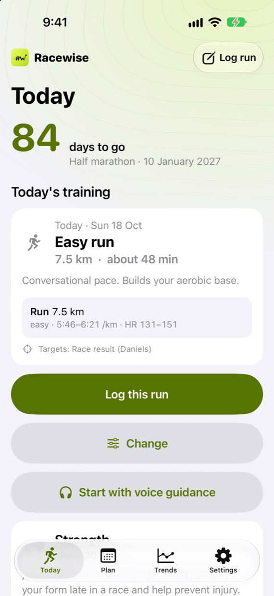

From first run to race day.
Tell RaceWise what you’re training for and how much you do now. It plans each week and changes the plan when your week changes.

A week that changes with you
One week of a half-marathon plan. Try what a real week throws at it.
- MonRest
- TueIntervals6 × 800 mIntervalsMoved
Busy day, so the session moved to Thursday.
- WedEasy run6 kmEasy run
6 km4 kmYour HRV was low this morning, so today is shorter.
- ThuRestIntervals6 × 800 m
Moved here, because hard days are never back to back.
- FriStrength25 min
- SatLong run16 km
Sent to your Apple Watch, step by step.
- SunRestSwim1.5 km easy
Several sports in one plan.Pro
The free version is a full plan, not a trial. One sport, every safety check and your Apple Watch sessions, with no time limit. Compare Free and Pro
Start from where you are
New to running
Choose My first 5K. You start with a minute of running at a time and build up week by week, with each milestone marked. Not sure when? RaceWise suggests a date.
Already training
Pick a race from hundreds of checked events or set your own date, and start now or up to four weeks later. Add every race you’ve entered: earlier ones become tune-ups. Train by pace, heart rate, power or feel.
- Running
- Swimming
- Cycling
- Rowing
- Hiking
Race day, planned
Your target pace, breakfast and drinks are free. Pro adds a split for every kilometre and the race in three parts.
- km 1–75:40
- km 8gel
- km 8–165:35
- km 15gel
- km 17–21.15:30
A hilly race? Enter the course’s climb, and the build weeks add hill repeats and hilly long runs. No hills near you? It says what to do instead.
A big hike? Every 100 m of climb counts like an extra kilometre. Your pack gets a little heavier every few weeks, and the last weeks include downhill practice.
Strength and stretching in 3D
Short routines for each sport, over 30 moves and no equipment. Tap a move and a 3D figure shows how; drag to turn it round. One-sided moves are done on each side. With Pro, a timer counts sets and rests, also on the Lock Screen.
Before you head out
With weather on, RaceWise checks the heat where you train and says how much to slow down. In the last ten days it shows the race-day forecast. Weather comes from Apple Weather.
A route for the session.Pro Routes of the right length from where you are, to follow in Google Maps or Apple Maps.
A coach that can’t change your numbers
Coaching notes are written on your iPhone by Apple Intelligence™, so what you type stays on your phone. Paces, distances and dates come from the plan. If a note has a number that isn’t in your plan, you see a plain summary instead.
Today is an easy run of 7.5 km at 5:46–6:21 /km. Keep it conversational. It builds the base for 17 January.
Slow, steady increases
Every plan passes a safety check. Weekly volume rises by no more than 10%, and more slowly for beginners, older athletes and anyone back from injury. If pain keeps following one kind of session, you’re offered a gentler version. Chest pain, palpitations or sharp bone pain: stop and get checked.
BaseBuildTaper
Also in the app
- Voice guidancePhone in your pocket, RaceWise talks you through each step and tells you your pace.
-
After each runA sentence or two on how it went against the plan.
- ProgressCharts for each sport and a running fitness score from your real results.
-
After the finish lineRecovery advice, then plan the next race, keep your fitness or take a break.
- Ask SiriToday’s session, a check-in or a workout logged by voice.
-
ShareCards and stickers, including a race bib and a medal.
-
Lock ScreenProGuided runs, the exercise timer and a race-morning countdown. Widgets and Control Center too.
-
Races from a posterProTake a photo of a race poster and RaceWise fills in the details.
Your sessions on your GarminPro
Connect the Garmin Connect™ app and the coming week’s running, cycling, swimming and strength sessions go to your Garmin calendar with pace and heart-rate targets. Finished Garmin activities come back, and the plan adjusts.
Free and Pro
Pro makes training easier. Anything to do with safety is free.
Free
- A full plan for one sport: a race, a target or a habit
- Daily check-ins and adjustments for pain and recovery
- Heat advice and race-day forecast
- Apple Watch sessions, step by step
- Coaching notes and voice guidance
- Strength and stretching with 3D figures
- Trends and running fitness score
- Race-day target pace and fuelling
RaceWise Pro
- Several sports in one plan
- Garmin Connect, both ways
- Full race-day plan with splits
- Routes for your sessions
- Lock Screen, widgets and Control Center
- Exercise timer
- Ask about your plan, add races from a photo
Pro is a subscription, monthly or yearly, with 14 days free. Prices are shown in the App Store. Cancel at any time in your Apple Account settings.
Your training stays yours.
No account, no ads and no analytics. Your plan stays on your iPhone and in your own iCloud, and nothing is sold or shared. A small server is used only if you connect Garmin or send feedback. You can delete everything from inside the app. Privacy policy
Questions or ideas?
Email racewiseapp@gmail.com, or use Settings › Send feedback in the app.
RaceWise gives general training guidance, not medical advice. If something hurts, stop and see a doctor or physiotherapist.